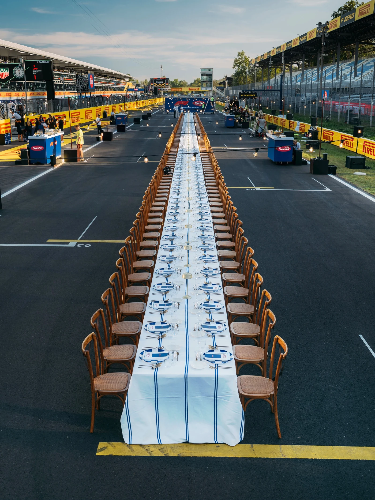
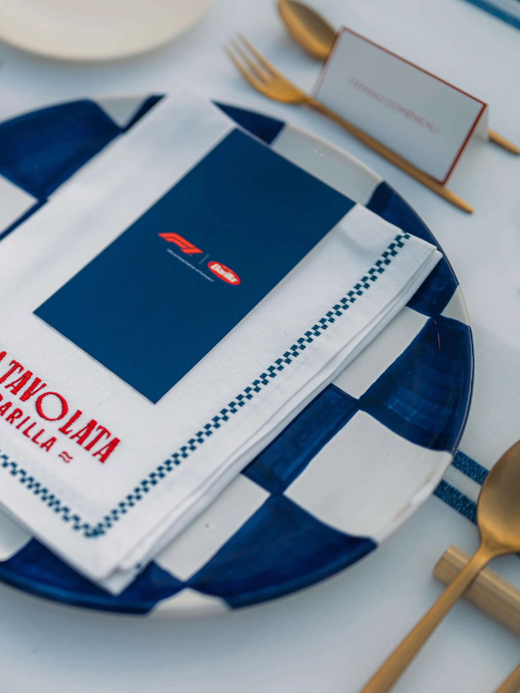
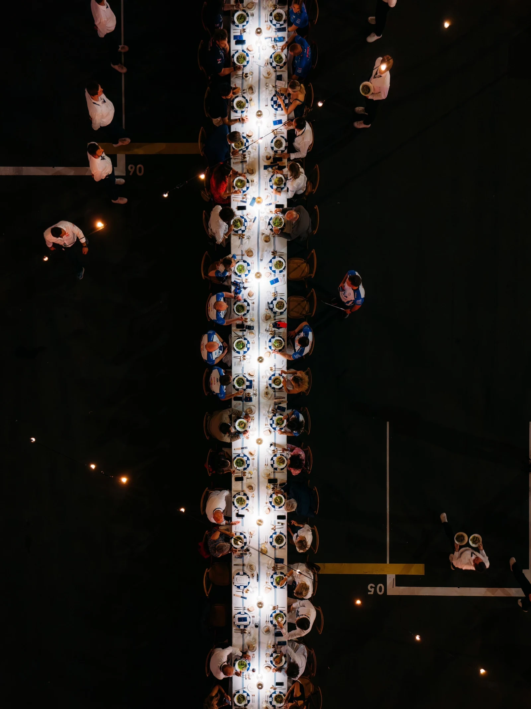
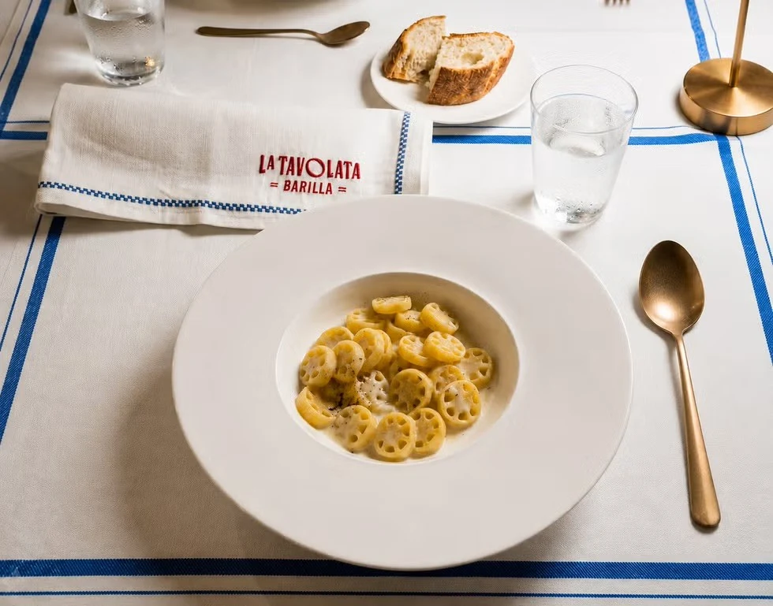

LA TAVOLATA
EVENT
2026
Good food. Good people. The F1 family, together around one very long table. For the 2026 Monza Grand Prix, Barilla teamed up with Formula 1 to create "La Tavolata", an exclusive 77-meter dinner set directly on the starting grid, curated by three-star Michelin chef Massimo Bottura. Produced by Sidequest (Charles Leclerc’s production company) alongside producer Mélanie Graveleau, I led the overall visual identity and graphic design in close collaboration with set designer Louisa Ceccaldi. My work encompassed the entire art direction and visual ecosystem, from the 3D spatial layout on the track to the complete graphic suite, including custom invitations, bespoke menus, custom-printed napkins, place cards, and full event signage.



